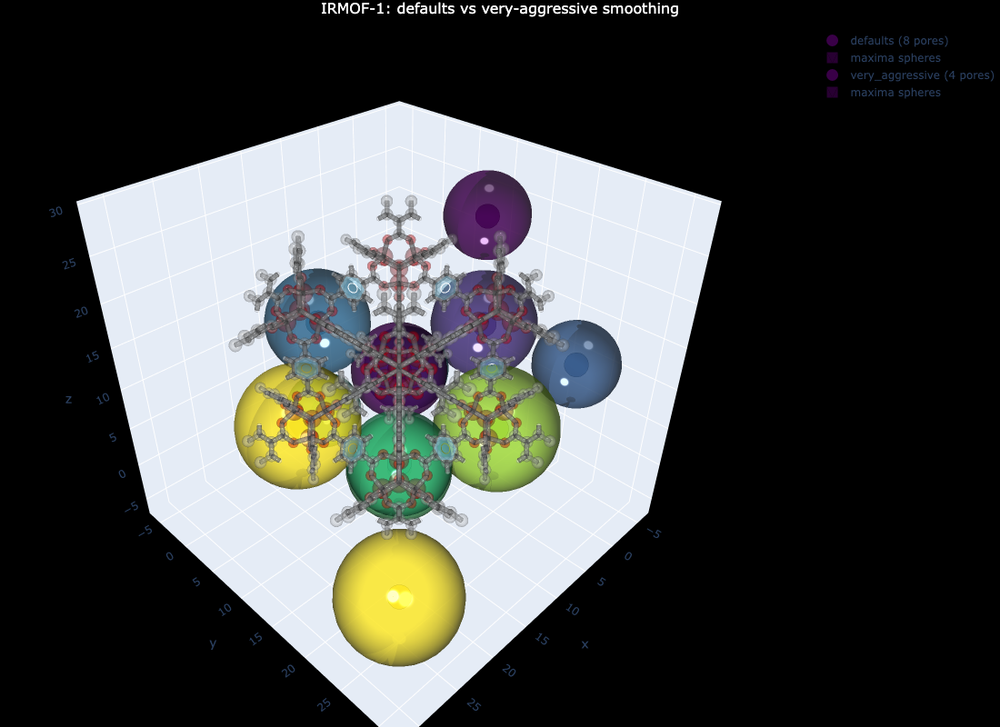

How the three selective-smoothing parameters (preserve_threshold, smooth_threshold, max_smooth_radius) control maxima detection in do_periodic_segmentation_rust
Overview
do_periodic_segmentation_rust runs h-maxima detection on a spatially-varying smoothed version of the distance grid, not on the raw grid. The idea is simple: small pores are real and should be kept; the surfaces of large channels are noisy and should be smoothed away. Between those regimes, smoothing is interpolated linearly.
This tutorial explains the three knobs that control this behavior and shows how to tune them in practice. The companion Region Segmentation tutorial gives the broader picture; Quick Start walks the full pipeline. Read those first if you have not.
The three parameters — all passed directly to do_periodic_segmentation_rust — are:
Parameter
Default
Role
preserve_threshold
3.0 Å
Below this distance, smoothing is off (real pockets preserved as-is)
smooth_threshold
6.0 Å
Above this distance, smoothing is at max (surface roughness removed)
max_smooth_radius
2.0
Cap on the per-voxel Gaussian σ in grid units (voxel factors)
What Selective Smoothing Does
Inside mgr_rust.detect_maxima_selective_smoothing_parallel the algorithm first builds a per-voxel “smooth radius” field from the local dgrid value v:
The grid is then convolved with a Gaussian of that σ, but only at voxels where the assigned σ is non-trivial. Finally, h-maxima runs on the smoothed grid.
In words:
Small features (dgrid < preserve_threshold) are real pockets. The distance value is small because a framework atom is close; smoothing would merge them with neighbors. Leave them alone.
Large features (dgrid > smooth_threshold) are wide channels or open cages. Their walls have small ripples from the underlying framework; smoothing removes those ripples so h-maxima does not see spurious “peaks” inside the channel.
In between, smooth just enough to suppress noise without erasing the pore.
The three parameters partition the dgrid range into three regimes — no smoothing, full smoothing, and a linear ramp in between. The shape of the ramp is always a straight line; only the endpoints move.
max_smooth_radius is a cap on the Gaussian σ, not a separate parameter for a different algorithm. With the default max_smooth_radius=2.0 and spacing=0.5 Å, the strongest smoothing uses a kernel of width ~4 voxels — enough to suppress grid noise but not so much that it eats real pores.
Note on units.max_smooth_radius is the Gaussian σ in grid units (multiples of spacing). With spacing=0.5 and max_smooth_radius=2.0, σ ≈ 1.0 Å in physical distance. The Rust kernel is anisotropic per axis when voxel_lengths is passed (always, in the current Python wrapper), so non-cubic cells are handled correctly.
import mofography as mgrimport mgr_rust # for direct comparison with the underlying Rust functionfrom ase.io import readfrom ase.geometry import cellpar_to_cellimport numpy as npimport logging# Quiet the noise — segmentation is chatty by defaultlogging.getLogger("mofography").setLevel(logging.WARNING)
Step 1: Load IRMOF-1 and Compute the Distance Grid
IRMOF-1 has two families of cages (small and large) and is a clean test case. The defaults produce 8 PBC-grouped pockets, which is what you should see in the cells that follow.
Show code
atoms = read("IRMOF-1.cif")print(f"IRMOF-1: {len(atoms)} atoms, cell = {atoms.cell.cellpar()[:3].round(2)} Å")spacing =0.5# Å — see distance_grid.qmddgrid = mgr.dgrid_from_atoms_rust(atoms, spacing=spacing)dgrid = dgrid.astype(np.float32) # Rust kernel requires float32print(f"dgrid: {dgrid.shape}, void max = {dgrid.max():.1f} Å")
IRMOF-1: 424 atoms, cell = [25.83 25.83 25.83] Å
dgrid: (52, 52, 52), void max = 7.5 Å
Step 2: Run Segmentation with Four Smoothing Configs
The full pipeline includes PBC merging, wall-maximum removal, and small-region cleanup. The smoothing parameters affect the raw maxima detected by the Rust function; the downstream post-processing then collapses most of the noise. For a well-behaved structure like IRMOF-1, the final PBC-merged pore count is therefore stable across reasonable settings, even when the raw count varies by 10×. That is the desired behavior — the algorithm should not be brittle to small parameter changes. We sweep both numbers to show the contrast.
The final PBC-grouped count stays at 8 for the first three configs (well-behaved structure). The fourth config (very aggressive — smooth_threshold=3.0 so essentially everything is smoothed at σ=8) collapses adjacent cage families down to 4 pores because extreme smoothing merges pockets that should be separate.
The raw count (the size of all_maxima, which is the number of voxels flagged as maxima before PBC grouping) is much more sensitive to the parameters. It does not always go down with more smoothing — the smoothed field develops new local maxima, so a very large kernel can create more “hills” than it removes. This is why the defaults matter.
Step 3: Look Directly at the Underlying Rust Detector
To isolate the effect of the smoothing parameters from the downstream PBC merge, call the Rust function directly. This is what do_periodic_segmentation_rust does internally before adding the PBC and post-processing steps.
Why the raw count is not monotonic in the smoothing strength. Smoothing a noisy field does not always reduce the number of maxima. A large kernel flattens small bumps but can create broad plateaus that, after h-maxima subtraction, become new maxima. The “right” smoothing is the smallest kernel that suppresses the surface noise — not the largest one. That is why the defaults are conservative: max_smooth_radius=2.0 is calibrated to grid spacing 0.5 Å, the canonical analysis resolution.
Step 4: When to Tune — The Recipes
The defaults are calibrated for spacing=0.5 Å with Bondi/CRC VDW radii on typical MOFs (IRMOF-1, UiO-66, ZIF-8, NU-1000, Cu-BTC). Depart from them only when you have a specific complaint about the output.
Symptom
First parameter to change
Why
Over-segmentation — too many tiny pockets, pockets inside large channels, pockets you can see are spurious on the dgrid isosurface
Smoothing is encroaching on the small-feature regime. The “no smoothing” band needs to extend down to the radius of the missing pocket.
Pockets detected in wall / framework
Raise preserve_threshold (3.0 → 4.0)
A higher preserve_threshold extends the “no smoothing” band upward and prevents smoothing from creating peaks inside thick walls.
Default count looks right but you want to verify robustness
Sweep max_smooth_radius from 0 to 4 in steps of 1
A robust result has a plateau of pore count vs max_smooth_radius. If the count drops as soon as you increase it, the original was on a knife-edge.
Slow run on a huge structure
Lower max_smooth_radius to 1.0
Larger kernels cost more per voxel. (This is the only reason to ever reducemax_smooth_radius.)
The four-config sweep above is a useful starting diagnostic. If your real run uses different h and threshold_abs than the canonical 0.2 and 1.5, the count plateau may shift — re-run the sweep at your operating point.
Heads up. All four parameters (h, min_distance, threshold_abs, plus the smoothing trio) interact. If you change one, you usually need to re-tune the others. Start with h and min_distance (they control what counts as a peak); only then consider the smoothing trio (which controls which peaks are real).
Step 5: Visualize One Comparison
A picture is worth a thousand len(seg['maxima_pbc']). Compare the defaults and the very aggressive configs to see what over-smoothing actually does.
Show code
import plotly.graph_objects as goimport plotly.express as px# Pull out the unit-cell maxima (the first N, where N = regions_pbc.max())def unit_cell_maxima(seg): n =int(seg["regions_pbc"].max())return seg["all_maxima"][:n]fig = go.Figure()cscale = px.colors.qualitative.Pastelfor name, seg in results.items():if name notin ("defaults", "very_aggressive"):continue maxima = unit_cell_maxima(seg) result = mgr.plot_maxima( dgrid, maxima, atoms, show_spheres=True, sphere_opacity=0.6, name=f"{name} ({len(maxima)} pores)", )# plot_maxima returns (scatter_trace, mesh_trace) when show_spheres=Trueifisinstance(result, tuple):for tr in result: fig.add_trace(tr)else: fig.add_trace(result)# Light framework so we can see the cagesmat = mgr.update_with_covalent_bonds(atoms)framework_traces = mgr.plot_framework_as_mesh( mat, stylize=True, kwargs_frame_mesh={"opacity": 0.25},)for tr in framework_traces: fig.add_trace(tr)fig.update_layout( scene_aspectmode="data", title=dict( text="IRMOF-1: defaults vs very-aggressive smoothing", x=0.5, xanchor="center", font=dict(color="white", size=16), ), paper_bgcolor="black",)fig.write_image("tutorial_images/selective_smoothing_compare.png", width=1100, height=800) # static preview for the docs
No node props provided, using default set: [position, scaled_position, element and atomic_number]
No edge properties provided. Use the default set: [bond_order, bond_type]

IRMOF-1: defaults vs very-aggressive smoothing
NoteInteractive version
# build `fig` as above, then:fig.show() # rotatable Plotly figurefig.write_html("smoothing_compare.html")
You should see two sets of sphere markers — one at the 8 PBC-grouped pockets produced by the defaults, and a smaller set at the 5 collapsed pockets produced by the very-aggressive config.
A Worked Example: Finding the Right smooth_threshold
Here is a practical scan to find the right setting. We vary smooth_threshold (the parameter that controls where the smoothing kicks in) at fixed preserve_threshold=3.0 and max_smooth_radius=2.0:
Show code
print(f"{'smooth_threshold':>16s}{'raw_maxima':>11s}{'pbc_grouped':>11s}{'regions_max':>11s}")print("-"*56)for st in [3.0, 4.0, 5.0, 6.0, 7.0, 8.0]: seg = mgr.do_periodic_segmentation_rust( dgrid, atoms, mask_thickness=0.05, h=0.2, min_distance=1.5, threshold_abs=1.5, preserve_threshold=3.0, smooth_threshold=st, max_smooth_radius=2.0, spacing=spacing, compute_connections=False, watershed_backend="rust_det", disable_tqdm=True, )print(f"{st:>16.1f}{len(seg['all_maxima']):>11d} "f"{len(seg['maxima_pbc']):>11d} "f"{int(seg['regions_pbc'].max()):>11d}")
For IRMOF-1, the final pore count plateaus at 8 from smooth_threshold=3.0 to 8.0 — IRMOF-1 is robust to this parameter. On a noisier structure (a defective MOF, a structure with adsorbed guest molecules, or a large unit cell with many small cages), you would see the count drop as smooth_threshold falls below the radius of the smallest real pocket.
Common Pitfalls
Pitfall
Fix
Treating max_smooth_radius as Å
It is a grid-unit factor. With spacing=0.5 and max_smooth_radius=2.0, σ ≈ 1.0 Å. If you switch to spacing=1.0, divide max_smooth_radius by 2 to keep the same physical smoothing.
Smoothing so hard that real pores merge
If regions_pbc.max() drops when you raise max_smooth_radius, you are erasing real features — back off.
Tuning smoothing when h is the actual problem
If over-segmentation is severe, raising h (e.g. 0.2 → 0.4) almost always helps more than tuning smoothing. Smoothing removes spurious maxima; h removes weak maxima. They overlap but are not the same.
Expecting the raw maxima count to monotonically decrease with more smoothing
It does not. A large kernel can create new local maxima in the smoothed field. Trust regions_pbc.max() (the PBC-merged count) as the metric, not the raw size.
Summary
Concept
What it does
preserve_threshold
Below this dgrid value, smoothing is off — real small pockets are kept.
smooth_threshold
Above this dgrid value, smoothing is at max — large-channel surface noise is removed.
max_smooth_radius
Cap on the Gaussian σ in grid units. Larger = more aggressive smoothing everywhere it is applied.
The three together
Define a piecewise-linear σ(dgrid) ramp from 0 to max_smooth_radius between preserve_threshold and smooth_threshold.
Key takeaways:
The defaults (preserve_threshold=3.0, smooth_threshold=6.0, max_smooth_radius=2.0) are calibrated for spacing=0.5 Å with Bondi/CRC VDW. They work for most MOFs.
The parameters operate on the raw maxima before PBC merging and post-processing. The final PBC-merged count is robust for well-behaved structures even when the raw count varies.
Over-segmentation → lower smooth_threshold or raise max_smooth_radius. Missing small pockets → lower preserve_threshold or raise smooth_threshold.
max_smooth_radius is a grid-unit factor, not Å. Rescale it when you change spacing.
Next Steps
Quick Start — the canonical three-call pipeline; this tutorial assumes you have read it.
Region Segmentation — the conceptual overview of h-maxima, watershed, and PBC; explains why selective smoothing exists in the first place.
Distance Grid — how the dgrid itself is built; smoothing operates on the dgrid, so the quality of the dgrid bounds the quality of the segmentation.
Connections and Windows — the next step in the pipeline once you have well-segmented regions.